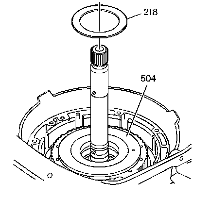
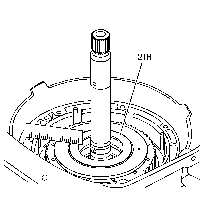

Turbine Shaft/Overdrive Carrier Installation
Turbine Shaft/Overdrive Carrier Installation
Tools Required
J 36850 Transjel(R) Lubricant

Important: Be sure the overdrive assembly is fully engaged and is level with the fourth clutch housing.
1. Install the turbine shaft and overdrive assembly into the transmission case.
2. Install the overrun clutch housing thrust washer (218) onto the overrun clutch housing assembly (504). Retain with J 36850 or equivalent.

3. Place a straight edge from the oil pump mating surface to the overrun clutch housing thrust washer (218). The 2 surfaces should be flush.